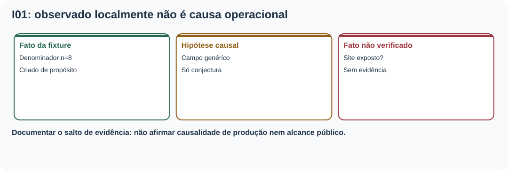
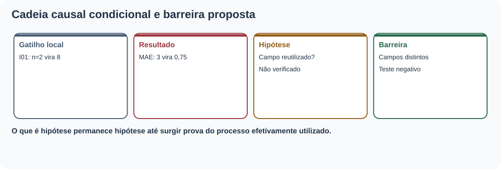
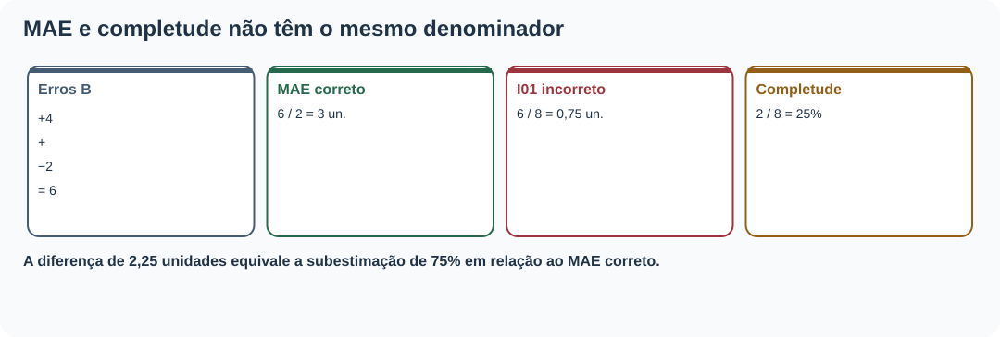
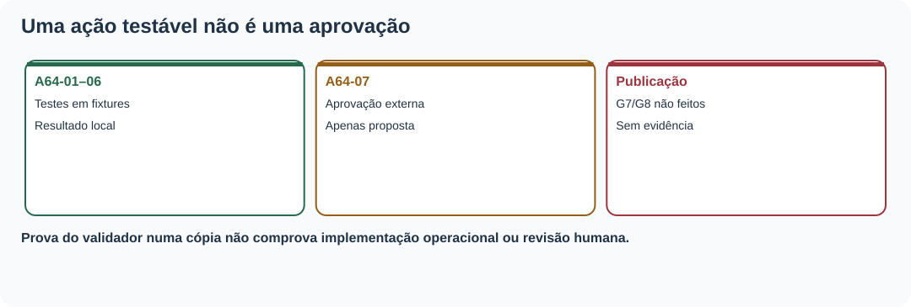
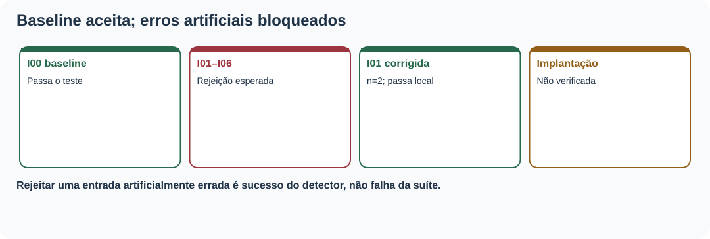
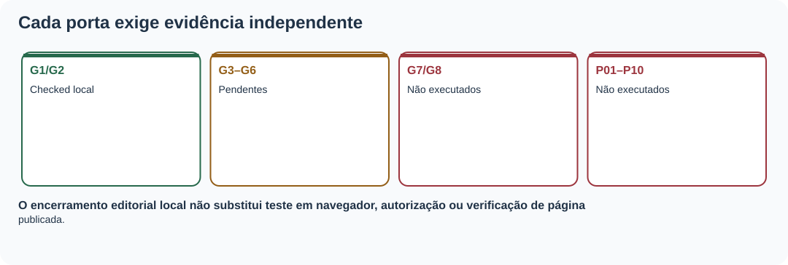

MAT-EST-064 — Análise pós-incidente e prevenção editorial: causas sistêmicas, ações verificáveis e revisão de controles
Área: Matemática. Unidade: Estatística — ponte universitária, auditoria e comunicação quantitativa. Nível: 6. Anterior: MAT-EST-063. Próximo proposto: MAT-EST-065. Origem: material e exercícios autorais; questões oficiais: zero. Progresso individual: não iniciado, sem evidência de estudo ou tentativa.
Organização: bloco A, fato, mecanismo e hipóteses causais (25 a 50 minutos); bloco B, ações verificáveis e matemática do risco de relatório (25 a 50 minutos); bloco C, revisão de controles, atividades, comunicação e síntese (25 a 50 minutos). Não presuma domínio por leitura.
1. Objetivos, pré-requisitos e limites do caso
Você deverá conseguir: distinguir o defeito artificial de um incidente realmente exposto; construir uma sequência causal em que evento, condição que permitiu a falha e barreira ausente são coisas distintas; formular hipótese causal sem afirmá-la como fato; converter recomendação vaga em ação verificável; recalcular médias com denominador correto; reconhecer detecção, prevenção e mitigação; distinguir teste do controle em fixture de implantação no site; preservar evidências antigas e atualizar uma política somente mediante novo registro; comunicar uma conclusão proporcional ao que foi observado.
Pré-requisitos: fração, média, porcentagem, módulos, MAT-EST-047, MAT-EST-049 e MAT-EST-053–063. Se a diferença entre 6 ÷ 2 e 6 ÷ 8 ainda causar dificuldade, refaça primeiro o exercício da seção 4.
Relação com vestibulares: proporcionalidade, leitura crítica de tabelas, medidas estatísticas, interpretação de texto e argumentação. A investigação de processos e controles editoriais é ponte universitária, não requisito específico atribuído ao ENEM ou a uma banca sem confirmação institucional.
Escopo do ensaio: a MAT-EST-063 produziu as cópias artificiais I01–I06 e a referência I00. Nenhum desses casos demonstra um incidente público, nem há evidência de pessoas afetadas, URL publicada, horário real, responsável designado ou aprovação. MAT-EST-064 não transforma hipóteses de falha sistêmica em diagnóstico operacional. Vamos praticar o método com os arquivos locais herdados.
2. Por que estudar o que acontece depois da correção?
Imagine um relatório que trocou o número de pares válidos pelo número de cartões previstos. Corrigir um número numa cópia pode devolver o resultado correto hoje. Mas, se a lógica de produção permite repetir a troca, o próximo relatório pode voltar a ficar incorreto. A investigação pós-incidente pergunta não somente qual erro apareceu, mas que condições o teriam permitido e como detectar ou bloquear reincidência. Em nosso ensaio não temos código de implantação real: as condições propostas serão explicitamente hipóteses e as medidas são um plano autoral de prevenção.
Uma boa análise documenta fatos, lacunas, mecanismos plausíveis, testes que discriminariam hipóteses, ações com evidência verificável e limitações. A literatura de Engenharia de Confiabilidade de Sites, ou SRE, apresenta análises pós-incidente sem atribuição de culpa e ações rastreáveis com prioridade, responsável e critério de término. Não se trata de usar a palavra “causa raiz” como certeza quando só existe uma mutação fabricada.

Figura 1. Texto alternativo: I01 foi mutada deliberadamente com n igual a oito; hipótese de falha sistêmica requer evidência adicional; usuários atingidos não foram verificados. Observe: são três categorias de afirmação. Conclusão para áudio: um experimento local descreve o mecanismo que queremos evitar, não demonstra defeito nem dano em produção.
3. Gatilho, mecanismo, condições contribuintes e barreiras
No exemplo I01, o gatilho artificial é trocar o campo denominator de dois para oito em uma cópia isolada. O mecanismo matemático é misturar duas populações: dois pares com erros conhecidos e oito cartões planejados. Uma hipótese de condição contribuinte seria um gerador que usa um único campo de contagem em todos os indicadores. Não verificamos esse gerador em operação. Uma barreira proposta é obrigar campos diferentes, count_evaluable e count_planned, com um teste negativo que bloqueia a troca. Uma segunda barreira é tornar explícita a legenda do corte A.
Perguntar “por que?” sucessivamente pode auxiliar, mas não cria prova. O primeiro porquê aponta para a divisão pelo denominador inadequado; o segundo levanta a possibilidade de reutilização de campo; o terceiro questiona se havia contrato de dados e testes. Os dois últimos são hipóteses de desenho e devem ser averiguados por inspeção do código e dos registros pertinentes antes de serem tratados como causa confirmada.
O mesmo método se aplica a I02, alternativa textual vazia; I03, decisão histórica reescrita; I04, hash divergente; I05, troca da unidade de custo; I06, legenda sem corte e pendências. Não concluir que o mesmo mecanismo causou todos: o padrão aparente vem de alterações intencionais feitas no laboratório editorial.

Figura 2. Texto alternativo: mutação observada, interpretação matemática, hipótese de mecanismo, prova ausente e barreira proposta aparecem numa cadeia sem afirmar causalidade real. Observe: o passo da hipótese para a causa operacional depende de evidência que não foi coletada. Conclusão por áudio: não preencher lacunas de investigação com suposições.
4. O exemplo numérico de ponta a ponta: duas perguntas, dois denominadores
O SANDBOX-057 contém oito cartões fictícios do corte A, dos quais somente S01 e S02 são avaliáveis. Os seis restantes são pendentes. Os erros assinados do modelo de referência B são mais quatro e menos dois; seus módulos são quatro e dois. O erro absoluto médio, chamado MAE, é:
[\operatorname{MAE}_B=\frac{|4|+|-2|}{2}=\frac{6}{2}=3\ \text{unidades}.]
Leitura: o erro absoluto médio de B é quatro mais dois, dividido pelos dois pares avaliáveis, igual a três unidades. Se dividíssemos a mesma soma pelos oito cartões planejados, sairia zero vírgula setenta e cinco unidade, um valor inválido para essa média. A diferença absoluta é três menos zero vírgula setenta e cinco, ou 2,25 unidades; a cifra falsa seria 75% inferior ao valor correto, calculando dois vírgula vinte e cinco dividido por três. Isso quantifica a distorção da fixture, não pessoas afetadas ou impacto público.
Para a completude, o denominador é outro: dois avaliáveis divididos por oito planejados, igual a um quarto, ou 25%. Esses 25% não são medida de precisão de previsão. No modelo C, módulos três e cinco dão MAE igual a quatro unidades; custo médio sete pontos em B e em C sob a regra didática anterior.
| Medida | Numerador | Denominador | Resultado e unidade |
|---|---|---|---|
| MAE B, válido | 4 + 2 = 6 | 2 avaliáveis | 3 unidades |
| MAE B mutado I01, inválido | 6 | 8 planejados | 0,75 unidade (não divulgar) |
| Completude | 2 avaliáveis | 8 planejados | 25 por cento |
| MAE C, válido | 3 + 5 = 8 | 2 avaliáveis | 4 unidades |
Síntese para ouvir: MAE só divide erros conhecidos por pares elegíveis; completude divide os pares elegíveis pelo total planejado. Usar oito na média de seis unidades fabrica aparente precisão. Um zero no campo de observação pendente não é valor observado.

Figura 3. Texto alternativo: seis dividido por dois resulta três unidades e dois dividido por oito resulta vinte e cinco por cento; seis dividido por oito resulta zero vírgula setenta e cinco incorreto como MAE. Observe: cada denominador se vincula à pergunta. Conclusão para áudio: uma contagem pode estar correta e ainda ser usada na medida errada.
5. De recomendação vaga a ação verificável
“Ter mais cuidado com os gráficos” não identifica artefato, comportamento esperado ou teste. O plano autoral MAT-EST-064-PLANO-v1 propõe sete ações distintas. A64-01 exige contagens separadas para pares elegíveis e planejados; A64-02 exige alternativa textual com os dados essenciais; A64-03 protege a conclusão histórica contra alterações; A64-04 vincula fonte e hash; A64-05 valida unidades; A64-06 obriga legenda com corte e pendências; A64-07 mantém revisão e deploy bloqueados sem evidências correspondentes.
Um critério de aceitação para A64-01 é específico: baseline com MAE B três e C quatro, completude vinte e cinco por cento e mutação que divide por oito rejeitada. O teste deve ser guardado com código da ação, versão e resultado. Para ações humanas, é preciso identificar quem efetivamente verificou e quando, em vez de completar artificialmente o campo de responsável.
Os testes desta aula reutilizam fixtures, e por isso os resultados A64-01 a A64-06 significam somente “teste local executado sobre exemplo”. Eles não equivalem a implantação de controles numa plataforma real nem a prevenção estatisticamente demonstrada. A64-07 é apenas proposta, porque os controles G3–G8 permanecem sem evidência de conclusão.

Figura 4. Texto alternativo: ações A64-01 a A64-06 contam com ensaio local de fixtures; A64-07 depende de registros humanos e externos inexistentes. Observe: resultado de teste e estado de implementação ocupam campos diferentes. Conclusão por áudio: não encerrar uma ação apenas porque ela possui uma descrição ou um teste didático.
6. Reteste, prevenção, detecção e efeitos colaterais
Prevenir significa dificultar que a versão incorreta seja criada: esquema com campos tipados e validação da grandeza. Detectar significa rejeitar um relatório que já traz denominador, alt, decisão, hash, unidade ou legenda incompatíveis. Mitigar significa impedir que uma versão suspeita se propague enquanto se verifica seu escopo. Corrigir altera uma cópia identificada; retestar comprova que a alteração específica não rompeu outro requisito. Nada disso prova, por si só, que houve implantação pública.
O exercício automatizado herdou I00 e I01–I06 sem reescrevê-las. I00 passou como referência; as seis mutações continuaram reprovadas pelos motivos esperados. O reteste em cópia de I01 restaurou denominador dois e passou, com o baseline intacto. Um teste negativo continua útil quando reprova: sua tarefa é identificar uma condição propositalmente errada.
É inadequado anunciar “cem por cento dos incidentes prevenidos” porque sete receitas artificiais foram verificadas. O denominador sete se refere apenas às sete receitas do laboratório, sem amostragem de incidentes reais. Uma métrica de eficácia futura exigiria população definida, período, exposição real e processo de coleta.

Figura 5. Texto alternativo: o teste local aceita I00 e a cópia corrigida de I01, e rejeita I01 a I06 ainda mutadas. Observe: reprovação de mutação negativa é resultado esperado. Conclusão por áudio: um conjunto de testes de laboratório pode provar comportamento do validador nas entradas usadas, mas não a eficácia de um controle publicado.
7. Revisão dos controles e condições para encerrar
Os estados herdados continuam: G1 e G2 checked_local — conferidos localmente; G3 a G6 pending — pendentes de revisão humana; G7 e G8 not_performed — não executados. P01–P10, itens do plano de pós-deploy, também seguem não executados. Alterar esses campos sem evidências seria introduzir uma falha nova no processo de auditoria.
O encerramento deste estudo editorial exige aula, questões, assets, hashes e validação do ZIP. O encerramento de uma ação local requer teste adequado e registro de resultado. O encerramento de um incidente real, se algum dia houver, exigiria escopo público verificado, registros temporais, comunicação pertinente, responsável e reteste da versão servida. Não existe incidente real a encerrar agora.
Para o histórico dos modelos, MAT-EST-049-PROT-v1 continua com cinco de oito pares, MAE B igual a 17,60 e MAE C igual a 8,36, custos médios 51,20 e 14,92 pontos, e piora local do desafiante de 19,2 unidades em t19, maior que a guarda de dez. Logo, C não foi promovido sob o protocolo original. t23–t25 não possuem observações nem emissões autenticadas; t26–t33 continuam alvos apenas propostos, sem pares avaliáveis. A aula não cria métricas novas para esses períodos.

Figura 6. Texto alternativo: G1 e G2 verificados localmente, G3 a G6 pendentes, G7 e G8 não executados; não há deploy nem revisão humana comprovados. Observe: cada controle precisa de sua evidência própria. Conclusão por áudio: teste local aprovado não implica autorização para publicação.
8. Modelo de mini-relatório pós-incidente, sem alegações indevidas
Contexto: “Reanalisamos apenas sete receitas deliberadamente artificiais da MAT-EST-063. Não foi detectado nem estimado incidente público nesta atividade.”
Achado verificável: “A mutação I01 trocou o denominador dois por oito. O MAE B passaria de três para zero vírgula setenta e cinco unidade, diferença de dois vírgula vinte e cinco unidades.”
Hipótese e plano: “Uma possível fragilidade seria a ausência de campos distintos para pares elegíveis e cartões planejados. A64-01 propõe validá-los separadamente. Não houve inspeção de implantação real que confirme essa hipótese.”
Verificação e limites: “O baseline e a cópia reparada de I01 passaram no teste local; seis mutações negativas foram rejeitadas como esperado. Revisão humana, implementação operacional e pós-deploy não foram realizados.”
9. Aplicações, relações conceituais e erros frequentes
Ligações: em Estatística, o denominador define a população de uma medida; em Computação, testes negativos e hashes dão rastreabilidade; em Língua Portuguesa e Redação, termos como “se”, “hipótese”, “observado” e “não verificado” evitam conclusões sem prova; em gestão de informação, ações especificam quem fará o quê, qual prova será preservada e quando rever a decisão. A análise pós-incidente é um exercício de causalidade, não de culpabilização.
Erros comuns: chamar mutação criada deliberadamente de defeito público; confundir gatilho com causa sistêmica; concluir causa pelo método dos porquês sem evidência; dividir por oito no MAE; usar “maioria dos controles” como substituto de G3–G8; tratar reprovação esperada de fixture como falha do teste; afirmar “incidentes evitados” sem observações externas; prometer prioridade, pessoa, prazo ou aprovação não registrados; substituir a versão anterior em vez de preservar ambas; declarar taxa zero em série sem pares; misturar unidade de custo com unidade de erro; omitir limitação ao comunicar um resultado.
10. Vídeo complementar e referências
Vídeo recomendado: Postmortem Action Items: Plan the Work and Work the Plan — John Lunney (Google SRE), USENIX SREcon17 Europe. A página institucional oferece vídeo da apresentação e arquivo de áudio. Idioma: inglês. Duração aproximada: sessão anunciada de uma hora, duração efetiva do vídeo não aferida. Assistir: depois da seção 5, para observar por que ações vagas não bastam e como transformar conclusões em compromissos rastreáveis. A página de mídia foi localizada; reprodução integral não realizada. A explicação da aula não depende do vídeo.
Leituras complementares: Google SRE, Postmortem Culture, Workbook; Google SRE, Postmortem Culture, SRE Book; Google Research, Postmortem Action Items; W3C WAI, Easy Checks. Referências institucionais informam boas práticas gerais, não validam as métricas ou classificações autorais do SANDBOX-057.
11. Exercícios, correção e autoavaliação
As 36 questões autorais estão em exercicios.md, em quatro blocos: dez de aprendizagem, dez de consolidação, dez de aplicação em estilo vestibular e seis de reteste posterior. Nenhuma é questão oficial. O gabarito-comentado.md é separado, para permitir tentativa independente. A correção identifica cálculo, conceito, interpretação, distração, memória, estratégia ou tempo. Registrar uma tentativa real antes de mudar o status individual.
12. Resumo pronunciável e revisão espaçada
O relatório de pós-incidente começa pelo que foi comprovado, não por uma causa presumida. I01 é uma falha produzida artificialmente: trocar dois por oito como divisor transformaria MAE três em valor incorreto zero vírgula setenta e cinco. Um controle útil separa contagem planejada da contagem elegível, guarda evidência de teste e depende de nova validação quando muda o artefato. Os demais erros sintéticos exercitam texto alternativo, história, hash, unidade e legenda. Uma aprovação local não prova revisão humana ou publicação. O histórico até t22 continua intacto e nenhum alvo de t23 a t33 ganhou observação nesta aula.
Revisão espaçada: contar um, sete e trinta dias a partir de uma tentativa REAL. No primeiro retorno, reconstruir a cadeia de I01 sem chamar hipótese de causa confirmada. No sétimo, calcular MAE e completude, explicar uma ação e seu teste. No trigésimo, realizar reteste e redigir o mini-relatório sem consultar respostas. Critério de domínio: explicar, calcular, transferir e reconhecer limites da evidência.
Próxima etapa proposta, ainda não iniciada: MAT-EST-065 — Indicadores de qualidade editorial: definição operacional, linhas de base e acompanhamento sem métricas ilusórias.
Limites de execução: material local, sem publicação, sincronização no Drive ou GitHub, incidente real, validação humana, deploy, teste manual no Edge ou reprodução integral do vídeo. Progresso individual inalterado.